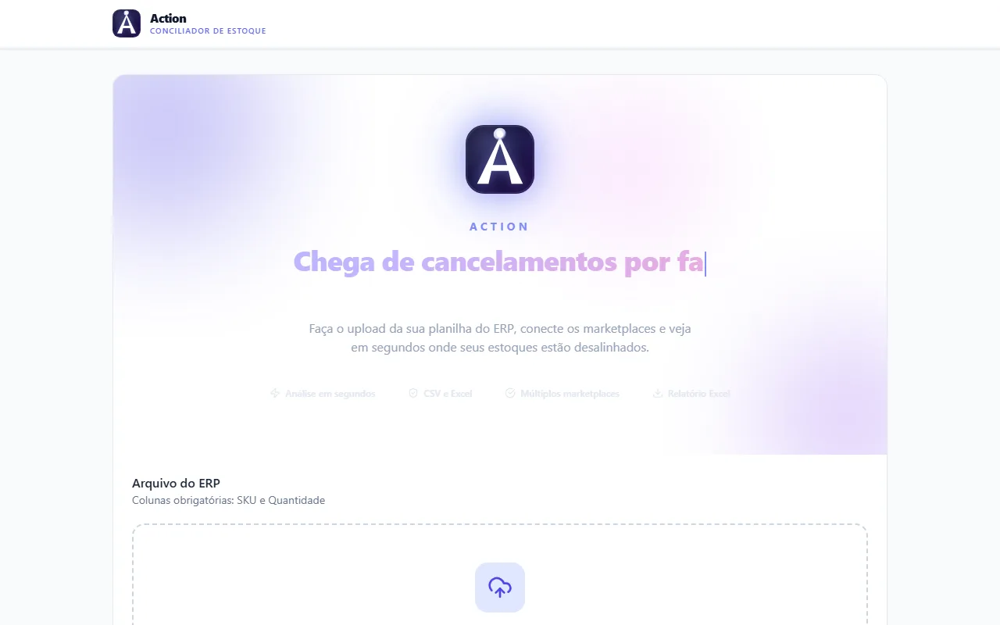
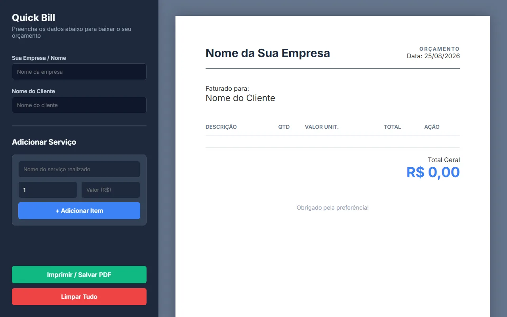
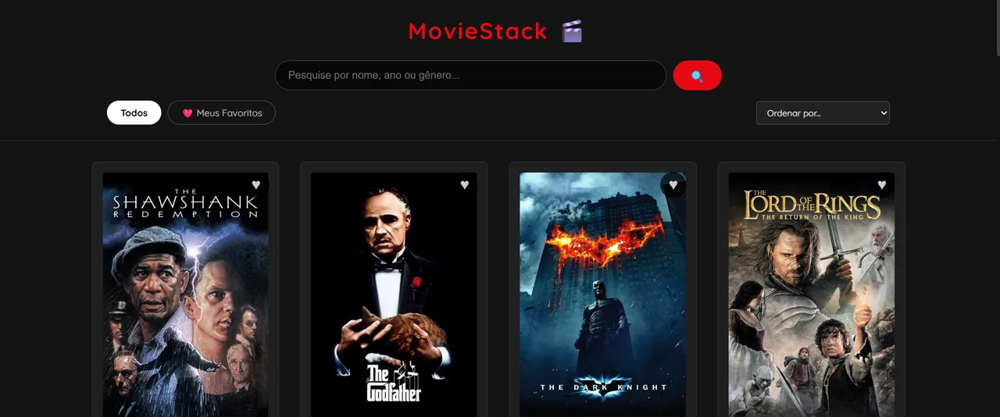

Sobre
Sou apaixonado por tecnologia e transformo ideias em software que funciona de ponta a ponta, do banco de dados ao pixel na tela.
Formado técnico em Desenvolvimento de Sistemas pela Etec Doutor Júlio Cardoso e hoje cursando Desenvolvimento de Software Multiplataforma na Fatec Franca. No dia a dia pratico orientação a objetos em Java, construo front-ends em JavaScript e React e venho estudando DevOps: integração e entrega contínua, versionamento semântico e deploy com Nginx.
Busco minha primeira oportunidade profissional para aprender com um time e entregar soluções eficientes.
Formação
-
Concluído
Técnico em Desenvolvimento de Sistemas
Etec Doutor Júlio Cardoso
-
Em andamento
Desenvolvimento de Software Multiplataforma
Fatec Franca · Tecnólogo
Projetos
Cada projeto resolve um problema real. Clique para abrir o site no ar; o Sistema Bancário roda no console e leva ao código.
Conciliador de Estoque

Reconcilia o estoque entre o ERP e os marketplaces.
- Problema
- Divergências de estoque entre o ERP e canais como Mercado Livre e Shopee geram vendas sem produto e anúncios zerados sem aviso.
- O que eu fiz
- Backend em FastAPI (Python) que processa as planilhas com pandas e classifica as divergências, e a interface em React + TypeScript que consome essa API.
QuickBill

Gerador de orçamentos que exporta PDF direto do navegador, sem backend.
- Problema
- Pequenos negócios precisam emitir orçamentos rápidos sem depender de planilhas ou serviços pagos.
- O que eu fiz
- Toda a lógica em JavaScript puro, com exportação para PDF via CSS de impressão e dados salvos no LocalStorage.
Catálogo de Filmes

Catálogo interativo com busca, ordenação e favoritos que ficam salvos.
- Problema
- Consumir uma base de filmes em JSON e apresentá-la de forma rápida, responsiva e sem telas em branco.
- O que eu fiz
- Interface responsiva em CSS Grid, skeleton loading enquanto carrega, modal de detalhes e favoritos salvos no LocalStorage.
Sistema Bancário
=== BANCO JAVA === 1. Criar Conta 2. Depositar/Sacar 3. Transferir 4. Listar Tudo 5. Sair Opção: 1 Número: 001 Titular: Matheus Tipo (1-Corrente, 2-Poupança): 1 ✓ Conta criada com sucesso.
Simulador bancário via console, minha base prática em Java.
- Problema
- Fixar os quatro pilares da orientação a objetos resolvendo um domínio realista: contas corrente e poupança.
- O que eu fiz
- Classes de conta com herança e abstração, saque com comportamento polimórfico por tipo de conta e projeto organizado em camadas (model, service, main).
| Vio Web | Projeto web em desenvolvimento | JavaScript |
| Pousada App | Aplicação para pousada | JavaScript |
| Projeto CI/CD | Integração e entrega contínua | CI/CD |
| Barbearia | Site para barbearia | HTML · CSS |
| Portfolio Nginx | Deploy de site estático com Nginx | Nginx |
| Projeto SemVer | Versionamento semântico | JavaScript |
Experiência
Antes do código, aprendi o negócio: dados, operação e marketplaces.
-
Jun/2026 — Atual6 meses · Presencial · Franca, SP
Assistente de Marketplace
Palácio das Ferramentas
- Análise comercial e gestão de marcas nacionais no Mercado Livre.
- Acompanhamento de KPIs e indicadores de desempenho das marcas.
- Análise e definição de precificação.
-
Set/2025 — Jun/202610 meses · Presencial · Franca, SP
Analista de Marketplace
Natural Fitness · promovido de Assistente
- Análise de indicadores para decisões de preço e catálogo.
- Gestão de campanhas de Ads no Mercado Livre, Shopee, Amazon, Magalu e TikTok.
- Resolução de problemas de ponta a ponta, do fluxo de pedidos às ocorrências com transportadoras.
-
Mar/2025 — Set/20257 meses · Presencial · Franca, SP
Auxiliar de E-commerce
Loja do Som e Acessórios Automotivos
Cadastro e atualização de produtos em marketplaces e relatórios de desempenho para apoiar decisões comerciais.
Stack
Ferramentas que uso nos projetos acima, do front ao deploy.
- HTML5
- CSS3
- JavaScript
- React
- Java
- PHP
- Python
- Node.js
- MySQL
- Git
- GitHub Actions
- CI/CD
- Nginx
Contato